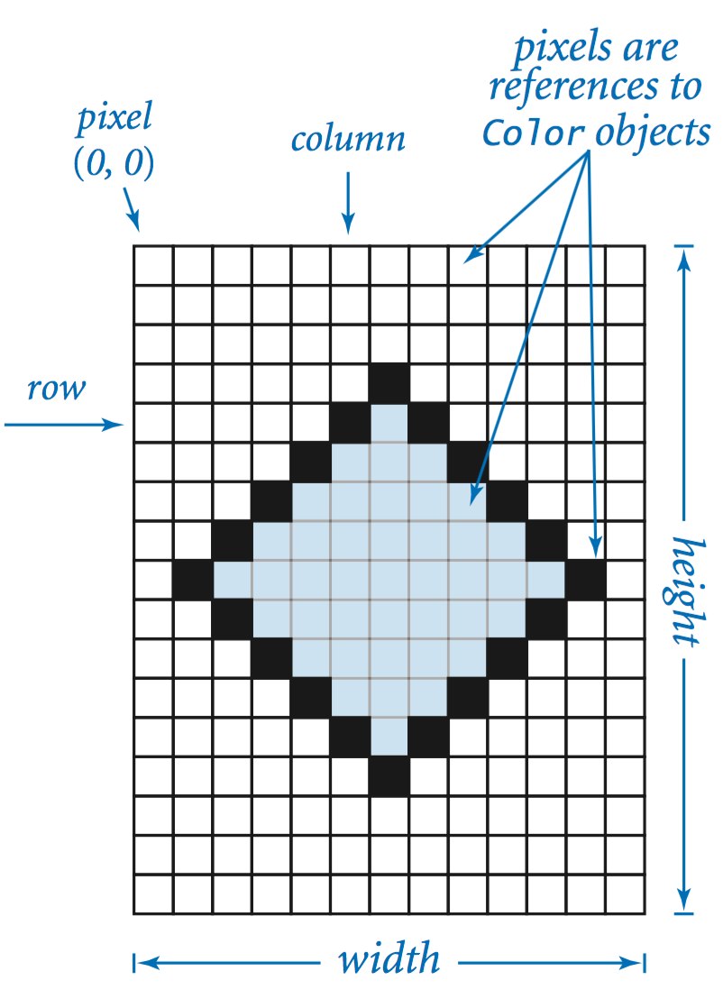

In this project, you will implement code to process digital images. A digital image is a rectangular grid of pixels (picture elements), where the color of each pixel is individually defined. In this project, we work with the types of images are referred to as vector images.

We provided a data type called Picture. The Picture data type allows you to manipulate digital images. You can load an image file using
Picture pic = new Picture(fileName);
Once loaded, you can manuplate the image using. For example: set the value of a pixel to a given color, and extract the color of a given pixel. The following API summarizes the available operations:
Most image-processing programs are filters that scan through all of the pixels in a source image and then perform some computation to determine the color of each pixel in a target image. In this project, you will implement code to flip (mirror) an image. For example:
Original Image:
Mirror image: